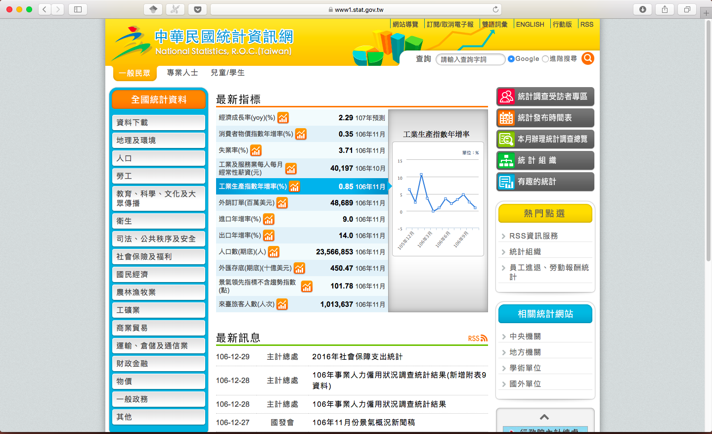

為什麼台灣的官方統計這麼難用？（一）
這是我在Aalto第二個學期的期末報告，課程是產品架構設計（Product Architecture Design）。原初是是分析芬蘭的官方統計服務，因為英文有相當嚴苛的字數限制，翻回中文之後，我才補進台灣的部分進一步分析。
選這個題目的初心來自去年在京都大學參加一個社會學學術工作坊，除了台大外，有首爾大學跟京都大學的師生帶團參加。當時蠻驚訝日本學生如何使用他們的政府統計系統，而且印象中，他們的統計網站可以自動生成圖表以供使用，十分方便。後來來到芬蘭，我發現官方統計也做得相當好懂。此時令我非常感興趣的是，服務設計背後提供服務的組織本身，如何影響其所設計/提供的服務。
本學期的課程閱讀主要跟產品架構有關，雖然偏向硬體的分析，但設計領域發展至今，已經不限於有形物件，我將其拓展到提供產品的組織。此外，一個我很有興趣的設計領域是參與式設計，本質上它也在討論設計相關的行動者，應該建立的是怎麼樣的關係，而這樣的關係最終影響設計的產出。這與前開組織與架構的討論有呼應之處。
這篇報告目的在分析芬蘭與台灣政府統計機關與其服務架構與組織架構的關聯。我想藉由說明他們怎麼收集、處理跟公開資料，來討論架構的差異，進而指出看不見的架構是如何影響多面的服務產出。我一開始的分析重點偏向整體國家統計體系的中心化與去中心化，然而我發現芬蘭與台灣提供的統計服務體驗與既有理論有所衝突。
芬蘭的統計體系較台灣去中心化，國家統計牽涉14個主要政府部門間的合作。理論上，它提供的統計服務應該會較難整合，進而影響一般使用者的體驗。然而實際上台灣的官方統計服務卻遠較為差而破碎，甚至讓我一開始誤以為台灣的統計體系是非常去中心化的。是以本文最後試圖轉向，討論中心化與去中心化系統外幾個可能的原因，它包含芬蘭公務體系的職位制、預算規模、台灣統計機關未獲得獨立地位等。最後試著導出台灣如果要改善，怎麼樣的方向會是比較可能的。
所以以下分成三個部分：
- 台芬官方統計服務的比較
- 國家統計系統的分析
- 台灣可以改善的方向
限於新的學期就要開始，我必須今天結束這份報告的撰寫。而我在著手這個題目之前，對國家統計這個題目從未涉獵，就手上擁有的資料我無法做出有力的結論。事實上，若能以最後的結論倒敘重新安排文章結構，這篇文章會通暢得多（我還是覺得我找到的這些資料蠻有趣的）。但現在就維持這樣有點類似memo而且口語的形式，當作思路發展的一個紀錄。
台芬官方統計服務的比較
統計系統的架構
 國家統計系統的冰山模型
國家統計系統的冰山模型
官方統計服務例如索取資訊、線上資料庫、官方報告等等，大概都是使用者最熟悉的。只是，藉由冰山的譬喻，這些服務只是看得到的部分，在水下面還有一堆看不見的複雜結構，撐起上面我們知道的那些東西。
靠著把冰山一層層畫出來，我要用它說明系統架構，包含（1）傳達資料（2）產製資料（3）整合 （4）統計系統模式。本篇文章先討論第一部分。
簡單分析芬蘭國家統計服務
在這段我簡單說明一下芬蘭的統計服務有什麼，就是冰山水上面那些大家平常會接觸的東西，之後再拿一些跟台灣相異的部分對照。
在芬蘭，所有國家統計服務，都被整合到一個單一入口網站 Tilastokeskus，由他們的國家統計機構 Statistics Finland 開發跟管理。我簡單把所有的服務歸納在下面這張圖：
 圖上面左邊這邊是主要的服務，右邊是他們各自的子項目內容。
圖上面左邊這邊是主要的服務，右邊是他們各自的子項目內容。
- 線上統計資料庫
首先是線上統計資料庫，都在一個入口網站上了。 Statistics Finland 給每個新發布與有更新的資料集，都做了類似新聞稿的簡單介紹，同時提供清楚好懂總結式的圖表。
資料集英文譯名為 Statfin，使用稱為 PX-Web (PX-Web - Select table) 的互動介面，這是由瑞典政府開發的，基於 SQL 資料庫技術的網路程式，在2015年免費開放。目前有將近20國/國際組織使用，芬蘭亦直接沿用之。
使用者首先選取資料集，接著選取想要的變項。
最後網站會自動產生相關的圖表（視資料內容呈現直方圖、折線圖、純表格……等。）給使用者，並且提供多種格式的下載選項（csv, xlsx, json, px 等）。
如果你對 PX-Web 資料集細節沒興趣，只想按主題瀏覽整理好的報告，還有專門放上述這些介紹跟報告的網站 Findicator Findicator.fi - Statistical information about Finland。
- 資訊服務
接下來是資訊服務， 如果公眾想要特定資料，或對統計有任何疑問，可以直接前往 Statistics 的服務台、電洽、或填寫線上表單索取/詢問。如果是既有簡單的內容，可以免費； 如果資料需要特別編譯、或特別龐大，則需要支付一定費用，但公務機關和學術單位免費。針對研究者，他們提供一個完整的清單，表列 所有可以藉由資訊服務索取的資料（https://taika.stat.fi/en/index） 。他們也有對公眾開放的統計圖書館跟供租借的電腦間。所有的資料都受到個人資料法的保護。
諮詢服務
Statistics Finland 同時也提供面向研究的諮詢服務。他們很自信地在網站上這樣宣稱：「Statistics Finland 的訪談與調查服務專業是芬蘭最頂尖的。」，並針對來自公私部門的研究單位，提供收費諮詢服務，例如問卷設計與測試、採樣、調查、訪談。教育課程
Statistics Finland 也提供公共教育課程，有線上也有線下的。線上課程主要是統計與研究方法的基本素養，也有主題式課程例如勞動、人口等，甚至有芬蘭統計史的課程。線上課程是文圖互動介面，視情況小節尾端會提供案例與隨堂測驗；線下課程則非常具有主題性，有的還跟上時事，譬如「另類真實與事實」、「消費趨勢」、「勞動市場」等，從主題切入，介紹如何運用統計工具跟取得相關資料。
](5.png) 此圖截自課程網頁，使用google translate翻譯：[Tilastokoulu](http://tilastokoulu.stat.fi/verkkokoulu_v2.xql)
此圖截自課程網頁，使用google translate翻譯：[Tilastokoulu](http://tilastokoulu.stat.fi/verkkokoulu_v2.xql)
- 官方統計報告
最後是官方統計報告的發布，也是透過 Statistics Finland 的網站公開。包含各種主題，譬如社會、經濟、環境的發展。同樣的，提供每年芬蘭國情概覽的國家統計年報也可以在此找到。
小結
芬蘭的線上統計服務相當清晰，儘管或許因為有四個統計主管機關，因此某些特定統計會外連到別的網站（例如芬蘭自然資源研究所），但因為介面都是統一使用 PX-Web，所以整體體驗仍然相當一致，搜尋資料也輕鬆愉快。
台灣的部分
首頁
台灣的部分，我會用類似芬蘭的架構去對應台灣的服務，最後再比較彼此不重複的部分。
- 線上統計資料庫

第一個是開放政府資料，嚴格來說不算統計，芬蘭也有自己的開放政府網站：opendata.fi。這不在本文討論範圍。
第二個資料庫很厲害，請務必點點看，連結見此：https://www1.stat.gov.tw/np.asp?CtNode=6168 統計資料庫的畫面
統計資料庫的畫面
讓我們試試看土地統計，我最終獲得了一個我沒辦法在mac上打開的 ods 格式。不能選格式嗎！
資料說明的頁面長這樣：
好，我發現我走錯了，統計網有個 for 專業人士的版本，讓我們來看看專業人士會獲得怎麼樣的線上統計資料庫服務。
首頁看起來還好，雖然視覺上蠻2000年代風格，但我至少知道資料應該在左邊這個menu。
選「國民所得與經濟成長」好了，大家對這個好像都蠻關切的。
是簡介，下方出現了神秘的資料查詢索引，上面畫底線的通通不能點，讓你在電腦前重溫30年前看說明書操作的惡趣味。
統計表的部分，好，至少有提供excel格式了，感覺忽然專業許多呢。
要看更完整的資料，可以到「資料庫」查詢，於是我點下去，來到一個新的視窗：
其實就跟芬蘭的 PX-Web 一樣！只不過功能與資料上都各種殘缺。實際上，就 PX-Web 的開發者——瑞典政府——的資料顯示，PX-Web examples，中花民國自由地區也是使用國。看來就是眼前的這個系統了，但這幾乎是孤島式的網站，也只有國民生產毛額、國民所得儲蓄與投資、對外交易、所得收支等幾項有資料，並沒有跟統計網上其他統計整合。最奇妙的是，儘管網站本身看起來很Windows 98，但資訊有持續更新到去年度。在這個系統上終於可以下載到 csv 格式了。而且，這個網站並沒有提供英文版。
有點氣餒地回到上一頁。有人可以告訴我下圖橫向menu的主計總處統計專區、國情統計通報、全國統計資料的差別嗎？「全國統計資料」似乎是比剛剛的「主計總處統計專區」範圍更廣的內容，但是中間高度重疊。
譬如國民經濟一項，似乎跟「主計總處統計專區」的國民所得及經濟成長與國富統計是同樣的東西。
當我點進國民所得統計，期待會看到跟剛剛一樣的頁面，結果不是：
試著點擊該唯一項目，居然跑到電子書的頁面了，我原本以為會直接拿到原始資料。
再點進底下「國民所得統計摘要」的子項目，原本以為會看到pdf檔，畢竟是電子書嘛。
結果我獲得了大量的excel跟odf，為什麼你們不把這個放在「統計表」那一頁…：
總之，統計線上資料庫跟迷宮一樣實在不太堪用。 腦海裡浮現的畫面是這個。
腦海裡浮現的畫面是這個。
- 資訊服務
台灣的部分，把資訊服務放在上圖橫向menu的最右邊，連結在此：https://www.stat.gov.tw/np.asp?ctNode=754。
點進去之後會發現，它還是跟其他統計專區的資料混在一起了，並沒有起理想上該有的分類作用，也沒有說明到底什麼是資訊服務。最下面雖然有個「聯絡我們」的線上表格系統。但僅供「歡迎您提出對本總處業務或網站的任何意見或建議」之用。
儘管如此，我還是在它的子分類找到這個，「電子書」跟「主計總處電子書平台」真的是熟悉又陌生的兩個概念。
原來電子書是在統計資訊網抓pdf，電子書平台是另外開一個網站抓pdf，還不能線上看，見識了。
統計資訊申請的部分，提供兩個服務，一個是叫你去直接跟政府統計出版品的經銷商買書，另一個是下載docx檔申請書，列印填寫傳真回給主計總處申請，且只能申請普查資料。芬蘭這邊是用網頁表單跟e-mail申請：Library of Statistics，而且服務範圍廣得多。
- 教育服務
入口非常不明顯，但我還是找到了，有數位教材，也有每年主計節舉辦的研討會。
https://www.stat.gov.tw/ct.asp?xItem=28948&CtNode=5578&mp=4
跳回一般人士的網站，我找到另一個不明顯的入口：「有趣的統計」，看起來也是公眾教育用的數位資源。
https://www1.stat.gov.tw/lp.asp?CtNode=2796&CtUnit=1109&BaseDSD=29&mp=3
點進去全部都是pdf，作者有相當逗趣的筆名，譬如小魚兒的作品〈中山北路走七擺〉
「有些地方道路名稱還是蠻有意思的……參照我國版圖相當位置取名，所以在台北市找廣州街，就要往南，要到酒泉街朝西北走準沒錯。
至於高雄市當然就屬那從南到北十條寬大筆直的大路，由南端一心路依序到北端的十全路，這一至十的數字含意有許多不同說法，這裏提供黃福鎮先生「地名趣談」乙文中所整理的 資料，了解數字道路典故由來:
1.一心路:取「萬眾一心」之意。 2.二聖路:「二聖」是指孔子和關公，兩人分稱文聖、武聖。 3.三多路:取多福、多壽、多男子的意思，是祝頌的話，引自(莊子，天地)所載「使聖人富，使聖人壽，使聖人多男子」，而「多富」因為音似轉稱「多福」，沿用至今。 4.四維路:指禮、義、廉、恥四個立國的綱紀……」

個人認為〈認識資料探勘〉、〈感謝吾妻〉、〈天上的星比地表的砂多，你相信嗎?〉等堪稱傳世之作。
給學生的網站，詳參：歡迎光臨中華民國統計資訊網─統計學習資源專區。我非常好奇是哪家公司接的標案。
裡面有一些相當厲害的藝術作品，離題了，略過不表。
主計總處沒有提供如Statistics Finland那樣的實體課程。
諮詢服務
沒有提供。官方統計報告
有，但跟上面的線上統計資料庫介面混在一起，很不好找，除此之外，有定期以pdf格式發佈的國情統計通報，但所引用之相關統計並未如芬蘭一樣提供線上連結。
https://www.stat.gov.tw/np.asp?ctNode=1495
以上是台灣的部分，其實，芬蘭有的五大類服務，台灣也有，只是最終呈現的服務品質落差甚大。有鑒於政府網站做得很爛並不是只有主計總處才有的事情，所以我不會把上述網站做得不好的部分全部歸因以下要討論的架構。我會試圖專注在架構跟所提供服務本身的關聯。